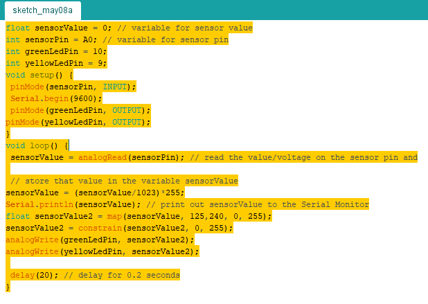
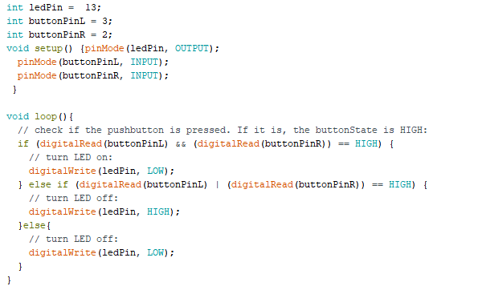
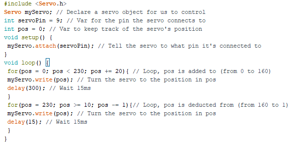
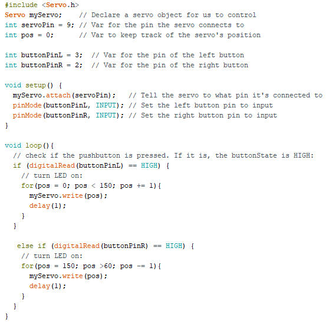
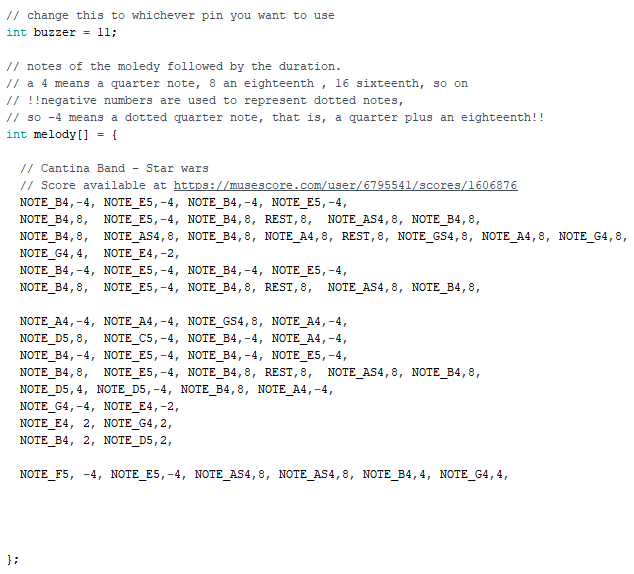

Arduino
Opdracht 3C:
Bij deze opdracht maken we gebruik van een Arduino waarmee we 2 led lampjes laten branden op een breadboard.
Een Arduino is een klein printplaatje die je kunt programmeren.
Die hebben we voor deze opdracht dmv een usb kabel in de laptop gestopt zodat de code overgezet kan worden van de laptop naar de Arduino.
De Arduino laten we communiceren met een breadboard dmv LED lampjes, resistors en jumper wires.
Het groene lampje brandt een halve seconde en gaat dan weer een halve seconde lang uit.
Het gele lampje brandt een hele seconde en is dan een hele seconde uit.
De code die we opsturen naar de Arduino ziet er als volgt uit:
Met als gevolg:
4C:
Bij deze opdracht gebruiken we de Arduino om 2 lampjes langzaam aan en uit te laten gaan.
Dit is anders dan opdracht 3 waarbij de lampjes gewoon aan en uit gingen.
De intensiteit van het licht stond altijd op 0% of op 100%.
Bij deze opdracht leren we dus om de intensiteit van het LED lampje aan te passen.
Zie onderstaande afbeelding voor de gebruikte code:
Met als gevolg:
Opdracht 6C:
Bij deze opdracht werken we met een draaiknop.
Door aan de draaiknop te draaien kunnen we de intensiteit van het licht van de LEDs aanpassen.
Zie onderstaande afbeelding voor de gebruikte code:
Met als gevolg:
Opdracht 7:
Bij deze opdracht gebruik je een licht sensor. De LEDs gaan aan als er geen licht is.
We geven 2 waarden aan: 125 en 240. Uit testen blijkt dat deze lichtsensor ongeveer tussen die 2 waarden actief is.
Het is extreem lastig om de cijfers buiten deze 2 waarden te krijgen, zelfs als je je vingers over de sensor houdt.
Vandaar dat we de sensorValue2 een map geven van 125,240,0,255. Het nummer van 0 houdt in dat de sensor helemaal geen licht ziet,
255 houdt in dat de sensor de maximale hoeveelheid licht ziet.
Om te voorkomen dat de lichtsensor weer helemaal aan gaat als hij per ongeluk toch onder de 125 komt gebruiken we een constrain.
Als het nummer dan onder de 125 komt blijven de LEDs uit. Zie onderstaande afbeelding voor de gebruikte code:

Met als gevolg:
Opdracht 8:
In deze opdracht leggen we uit hoe elektriciteit werkt.
Op de Arduino gebruiken we steeds de 5 volt uitgang.
Die levert 5 volt aan energie naar het breadboard waar we steeds dingen mee doen.
Vervolgens gebruiken we allerlei resistors zoals de licht sensor.
De lichtsensor is verbonden met de hoeveelheid volt.
Als er meer licht op de lichtsensor komt dan is er minder weerstand.
Als er minder licht op de lichtsensor komt dan is er meer weerstand.
Op die manier kun je door de lichtsensor te gebruiken ook invloed uitoefenen op de LEDs die ook op het breadboard staan.
Dat is wat we gedaan hebben bij de vorige opdracht.
Opdracht 9b:
Bij deze opdracht werken we met Processing. Hiermee kun je allerlei vormen creeeren. Die kun je vervolgens koppelen aan je arduino setup.
Op deze manier kunnen we dus dingen op het scherm manipuleren via de sensors op de arduino. Zie onderstaande afbeelding voor de gebruikte code:
Met als gevolg:
Opdracht 10:
Bij deze opdracht zetten we de lampjes aan via een knop. Zie onderstaande afbeelding voor de gebruikte code:

Met als gevolg:
Opdracht 11:
Bij deze opdracht manipuleren we een servomotor. Zie onderstaande afbeelding voor de gebruikte code:

Met als gevolg:
Opdracht 12:
Bij deze opdracht bedienen we de servomotor door het te koppelen aan 2 knoppen. Zie onderstaande afbeelding voor de gebruikte code:

Met als gevolg:
Opdracht 13:
Bij deze opdracht spelen we muziek (Cantina van Star Wars) via een speaker. Zie onderstaande afbeelding voor de gebruikte code:

Met als gevolg: